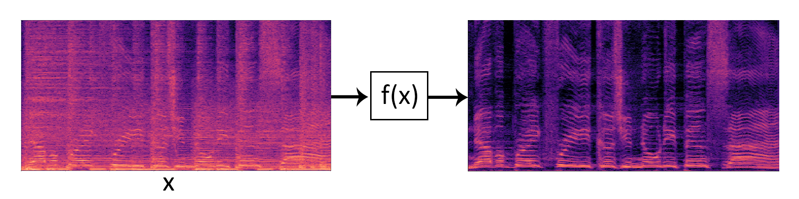
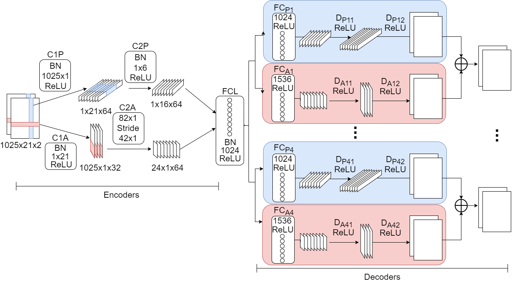

A music source separation system capable of isolating bass, drums, vocals and other instruments from a stereophonic audio mix is presented. The system was developed for the fullfilment of my degree thesis "Separación de fuentes musicales mediante redes neuronales convolucionales". The thesis report and Python scripts to perform separations and train the neural network, together with DemixME, a standalone Windows x64 application I created which separates instruments in realtime and allows remixing songs on the fly are provided in the following links:
Mixture
Mixture
Bass
Bass
Drums
Drums
Others
Others
Vocals
Vocals
Mixture
Mixture
Bass
Bass
Drums
Drums
Others
Others
Vocals
Vocals
In the first stage, the audio mixture is turned into an image-like representation. This can be achieved applying a Short Time Fourier Transform and calculating its magnitude. The result is a spectrogram, where the vertical axis corresponds to frequency and the horizontal axis to time.
The second stage consists in turning the spectrogram of the audio mixture into the spectrogram of the desired source. This is achieved using a convolutional neural network. The DSD100 dataset is used to train it. It provides mixtures and sources (bass, drums, vocals and others) from 100 different songs (50 for training and 50 for testing).

The proposed neural network is inspired in DeepConvSep:
Some of the differences with DeepConvSep are:

The convolutional neural network takes as input a stereophonic spectrogram and reduces its dimensionality using two parallel encoders. The latent space consists of a fully connected layer and its output is a compact representation of the mixture. Multiple decoders take as input this compact representation. The first layer of the decoders is fully connected and its purpose is to transform the representation of the mixture into a representation of the source to isolate. The next layers, which are convolutional, reconstruct spectrograms from the transformed latent space.
Instead of using a neural network for each source to separate, a single neural network is used, which outputs the estimation of the four sources (bass, drums, vocals and others). This way, processing time is reduced and information of all sources is shared among decoders.
Once the spectrograms are estimated, in the final stage a time-varying filter is performed through soft masks. This way, the processing reduces to filtering the input audio mixture, instead of generating from scratch new audios with the neural network. The resulting spectrograms are taken back to time domain applying the Griffin Lim algorithm.
Currently I am exploring new neural network architectures to separate any kind of sources with a focus in real time applications.
My name is Leonardo Pepino and I am passionate about audio signal processing and machine learning. I like creating tools useful for artists and sharing what I learn in the way.
Feel free to write me:
leonardodpepino@gmail.com
If this was useful for your research, please reference it as:
@thesis{pepino2019, title={Separación de fuentes musicales mediante redes neuronales convolucionales}, author={Pepino, Leonardo}, school={Universidad Nacional de Tres de Febrero}, year=2019 }